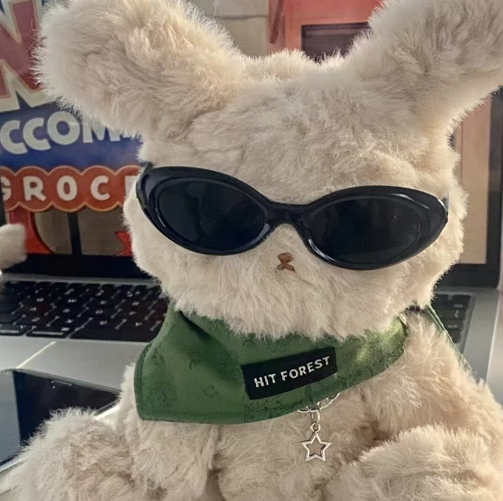

地图在脚下展开
冒险日志 · Quest Log
点击地图节点，查看正在成长的项目。每一条路径都从一个问题开始。
Every trail begins with a question.
Every trail begins with a question.
研究种子 · Research seeds
把复杂问题，种成可以理解的形状。
我关心模型如何从结构中学习，也关心这些能力怎样帮助我们理解真实世界中的医学图像。目前仍在路上——保持提问，持续实验，认真记录。
I study how models learn from structure, and how those abilities can help us understand medical images in the real world. Still learning, always experimenting.
- 01机器学习Machine Learning让数据形成判断
- 02图基础模型Graph Foundation Models让连接成为语言
- 03医学影像Medical Imaging让像素携带意义

抵达今日的营地
一起聊聊下一次探索。
如果你也对机器学习、图模型或医学影像感兴趣，欢迎来信。
If our paths cross, let’s build something thoughtful together.